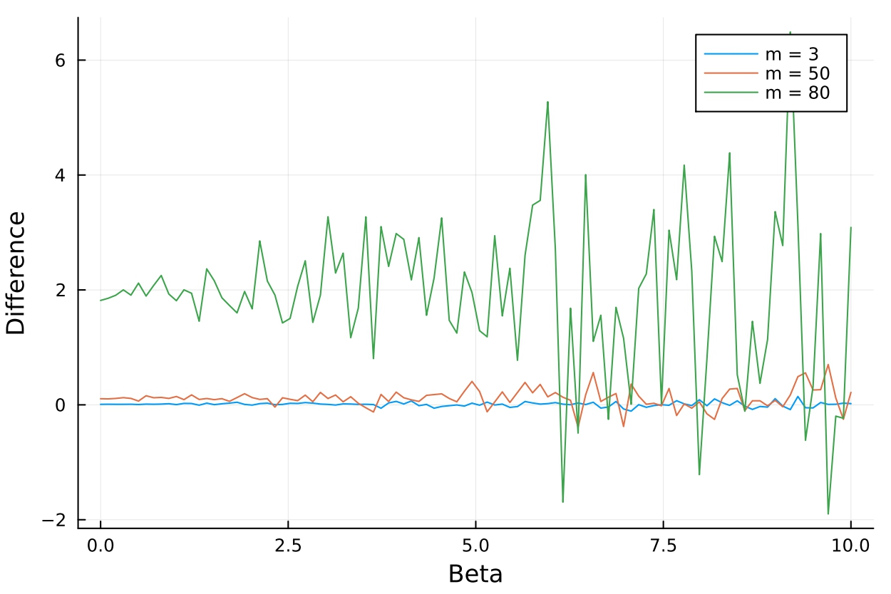

courses
exercise sessions
CERGE-EI: Econometrics II
Prof. Anna Houštecká. Notes. Homework:
CERGE-EI: Statistics
Prof. Paolo Zacchia.CERGE-EI: Econometrics of Macro and Financial Data
Prof. Stanislav Anatolyev.